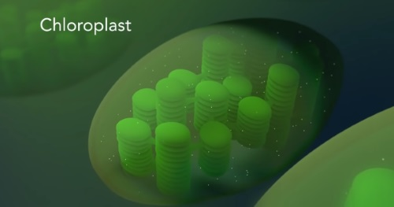
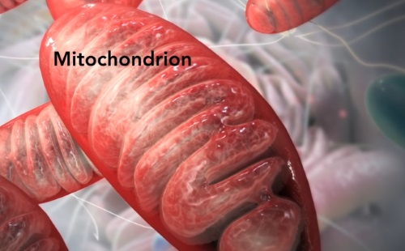

代謝
生体内での化学反応全体を[A]代謝という。
[A]のうち、複雑な物質を単純な物質にすることを、[B]異化[取り出す/使用する]
[A]のうち、単純な物質を複雑な物質にすることを、[C]同化[取り出す/使用する]
一般的に細胞内の代謝によるエネルギーのやり取りは、ATP(アデノシン三リン酸)と呼ばれる分子を仲立ちにする。
ATPは、アデニン(糖)で構成される、「アデノシン」に3つのリン酸が結合した化合物である。
リン酸同士は高エネルギーリン酸結合)とリン酸に分解されるとき、エネルギーを放出する。
生体内の反応は、[D]酵素によって、促進される。
[D]の主成分はタンパク質で、DNAの遺伝情報によって、必要に応じて細胞内で合成される。
[D]は、あくまで[E]という「反応を促進させる物質」であり、[D]自身は、反応によって変化しない。
[D]には、反応に最適な、すなわち反応速度が最も大きくなる温度である、最適温度があり、ヒトの細胞の[D]の場合、それは40度前後であることが多い。
また、[D]には、反応に最適な、すなわち反応速度が最も大きくなるpHもあり、最適pH)でpH2前後というのがある。
[A]はいくつもの連続した反応から成り立っていて、それぞれ異なる[D]がかかわるので、n[回]の反応につき、一般に[D]はn個必要である。
[D]はそれぞれ決まった物質としか反応しない。[D]が作用する相手の物質を基質という。
光合成
すべて書かせる形式の化学式は以下の通り。後ろのほうに穴埋め形式もあるので需要があれば。
光合成反応をざっくり言葉で説明すると、光を合成して、それを分解したときに出るエネルギーを用いて有機物を作る反応。 葉緑体で行われる。
葉緑体の構造。
[a]チラコイドという扁平な袋状の構造が発達している。(画像でいう、緑色の部分)
[a]が層状に重なった部分をグラナという。(画像でいう、緑色が縦に並んでいる部分)
残った空間を、[b]ストロマという。
[a]上にはクロロフィルなどの光合成色素が存在して光エネルギーを受容する。
反応の詳細
- 光合成色素によって光エネルギーが吸収される。
-
チラコイド膜にて
吸収された光エネルギーによってH2Oが分解され、
O2(水素イオンや電子の運び屋)と、ATPが合成される。 -
ストロマにて
カルビン・ベンソン回路の中で、
CO2(水素イオンや電子の運び屋)が運んできたH+やe-や、ATPが運んできた化学エネルギーによって還元され、
H2Oが作られる。
穴埋め形式化学式は以下の通り。[a]から[g]までにあてはまる自然数を後に示す回答欄に埋めて使ってください。
| [a] | 6 |
| [b] | 12 |
| [c] | 6 |
| [d] | 12 |
| [e] | 6 |
| [f] | 6 |
| [g] | 6 |
呼吸
化学式は以下の通り。穴埋め形式は下のほうにある。
呼吸反応をざっくり言葉で説明すると、有機物を分解した際に放出されるエネルギーを用いて、ADPからATPを合成する。 おもにミトコンドリアで行われる。
ミトコンドリアの構造
ミトコンドリアは二重の膜構造でできていて、内膜は内側に折れ込んだひだ(クリステ)を作っている。
内膜に囲われた部分をマトリックスという。
反応の詳細
-
ミトコンドリア外の細胞質基質の「解糖系」にて
C6H12O6 (グルコース)が C3H4O3 (ピルビン酸)に分解される。
その過程で、NADH(エネルギーや電子の運び屋)と少量のATPが合成される。 -
ミトコンドリア内の「クエン酸回路」にて
先ほど生成された、C3H4O3 (ピルビン酸)が、ミトコンドリア内の酵素によって段階的に分解され、
CO2(エネルギーや電子の運び屋)と少量のATPが合成される。 -
ミトコンドリア内の内膜上の「電子伝達系」にて、
今までに生じた、NADHの持つエネルギーを用いて、大量のATPを合成する。
この過程でO2が利用され、 H2Oが発生する。
呼吸で発生するATPの大部分は電子伝達系で発生する。
授業中に脱線していた話のメモ
名探偵コナンでおなじみの、青酸カリ(KCN/シアン化カリウム)は、電子伝達系を機能不全にする。
余談だが、摂取して胃酸と反応すると、いわゆるアーモンド臭(収穫前の)がするらしいが、実際にこのにおいを感じるのは遺伝的に半数ほどらしい。
つまり彼は2分の1の当たりくじを引いた(?)わけである。
また、KCN含むシアン化合物は、法規制の対象である。具体的には「毒物及び劇物取締法」に基づいた購入時の身元確認や販売記録の保管、鍵がかかる倉庫などでの保管や在庫量の記録が求められている。
穴埋め形式化学式は以下の通り。[a]から[g]までにあてはまる自然数を後に示す回答欄に埋めて使ってください。
| [a] | 6 |
| [b] | 12 |
| [c] | 6 |
| [d] | 6 |
| [e] | 6 |
| [f] | 6 |
| [g] | 12 |
酸素を用いずに有機物からエネルギーを取り出す生物の話
微生物の中には、酸素を使わないで有機物を分解し、エネルギーを得るものがいる。 この働きを発酵という。
細菌の一種の乳酸菌は
「乳酸発酵」
を行い、酸素を使わずにグルコースを分解して、乳酸を生成する。
この過程でATPを合成している。
これはヨーグルトづくりなどに活用される。
単細胞の真核生物の酵母は、酸素があるときは呼吸しているが、酸素が少ないときは、
「アルコール発酵」
を行い。酸素を使わずにグルコースを分解して、エタノールを生成する。
この過程でATPを合成している。
これは酒類の製造に活用されたり、パンを膨らませるのに利用される。
ただしこれで生成される、ATP量は呼吸の10分の1ほどである。